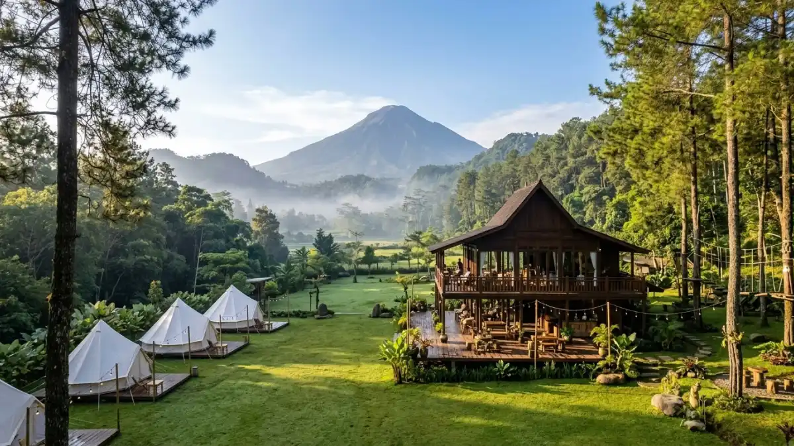

Team building Trawas Mojokerto adalah kegiatan pengembangan kerja sama tim yang diselenggarakan di kawasan pegunungan Trawas, Mojokerto, dengan memanfaatkan udara sejuk, lahan terbuka, dan fasilitas outbound. Kawasan ini dipilih karena aksesnya mudah dari Surabaya dan Malang serta menyediakan beragam venue.
DAFTAR ISI
- 1. Mengapa Trawas Mojokerto Populer untuk Team Building?
- 2. Apa Saja Jenis Venue Team Building yang Tersedia di Trawas?
- 3. Aktivitas Apa Saja yang Biasa Ada dalam Team Building di Trawas?
- 4. Berapa Estimasi Biaya Team Building di Trawas Mojokerto?
- 5. Bagaimana Cara Memilih Penyedia Team Building yang Tepat?
- 6. Kapan Waktu Terbaik untuk Mengadakan Team Building di Trawas?
- 7. Kesalahan Umum yang Perlu Dihindari
- 8. Kesimpulan
- FAQ
1. Mengapa Trawas Mojokerto Populer untuk Team Building?
Trawas populer karena kombinasi udara sejuk, pemandangan pegunungan, dan jarak tempuh yang relatif dekat dari kota-kota besar di Jawa Timur.
Kawasan Trawas berada di ketinggian yang membuat suhu udaranya lebih sejuk dibanding wilayah kota, sehingga nyaman digunakan untuk aktivitas fisik sepanjang hari.
Selain itu, banyak penyedia jasa di daerah ini yang sudah terbiasa menangani rombongan korporat maupun instansi pendidikan, sehingga fasilitas pendukung seperti aula, area parkir bus, dan dapur umum umumnya sudah tersedia.
Faktor lain yang membuat Trawas diminati adalah variasi pilihan venue. Peserta dapat memilih dari villa keluarga skala kecil hingga camp ground yang dapat menampung ratusan orang sekaligus, tergantung kebutuhan acara.
2. Apa Saja Jenis Venue Team Building yang Tersedia di Trawas?
Jenis venue di Trawas umumnya terbagi menjadi villa pribadi, resort dengan fasilitas outbound, dan camp ground terbuka.
Villa pribadi biasanya digunakan untuk rombongan kecil hingga menengah yang membutuhkan privasi lebih, lengkap dengan ruang aula dalam ruangan.
Resort dengan fasilitas outbound umumnya menyediakan paket lengkap mulai dari penginapan, konsumsi, hingga instruktur permainan.
Sementara camp ground terbuka lebih cocok untuk kegiatan dengan nuansa alam yang lebih kental, seperti api unggun dan permainan di lapangan luas.
Setiap jenis venue memiliki kelebihan tersendiri, sehingga pemilihan sebaiknya disesuaikan dengan jumlah peserta, anggaran, dan tujuan utama kegiatan, apakah lebih menekankan relaksasi, pelatihan, atau kombinasi keduanya.

Pemandangan villa dan campground di kawasan pegunungan Trawas, Mojokerto. (Ilustrasi)3. Aktivitas Apa Saja yang Biasa Ada dalam Team Building di Trawas?
Aktivitas team building di Trawas umumnya mencakup permainan kerja sama tim, tantangan fisik ringan, dan sesi refleksi kelompok.
Beberapa aktivitas yang umum ditemui antara lain permainan estafet kelompok, simulasi pemecahan masalah, flying fox, dan war game.
Selain aktivitas fisik, biasanya juga disisipkan sesi diskusi atau debrief yang bertujuan menghubungkan pengalaman permainan dengan situasi kerja sehari-hari.
Pemilihan jenis aktivitas sebaiknya disesuaikan dengan tujuan acara, misalnya penguatan komunikasi antar divisi, pelatihan kepemimpinan, atau sekadar penyegaran suasana kerja setelah periode sibuk.
4. Berapa Estimasi Biaya Team Building di Trawas Mojokerto?
Biaya team building di Trawas dapat bervariasi tergantung jumlah peserta, durasi menginap, dan fasilitas yang dipilih, sehingga sebaiknya dikonfirmasi langsung ke penyedia jasa.
Secara umum, komponen biaya yang perlu diperhitungkan meliputi sewa venue, konsumsi, instruktur outbound, peralatan permainan, dan transportasi jika menggunakan jasa antar-jemput.
Paket dengan fasilitas lebih lengkap dan durasi lebih lama biasanya membutuhkan anggaran yang lebih besar dibanding paket sederhana satu hari.
Untuk mendapatkan gambaran biaya yang akurat, disarankan meminta penawaran tertulis dari beberapa penyedia sekaligus membandingkan cakupan fasilitas yang ditawarkan, bukan hanya membandingkan angka nominal.
5. Bagaimana Cara Memilih Penyedia Team Building yang Tepat?
Cara memilih penyedia team building yang tepat adalah dengan memeriksa portofolio, kejelasan paket, dan kesesuaian fasilitas dengan kebutuhan acara.
Beberapa hal yang perlu diperhatikan antara lain rekam jejak penyedia dalam menangani rombongan sejenis, kejelasan rincian biaya dalam penawaran, ketersediaan instruktur berpengalaman, serta standar keamanan peralatan outbound yang digunakan.
Komunikasi awal yang responsif juga menjadi indikator profesionalitas penyedia jasa.
Selain itu, sebaiknya tanyakan pula kebijakan pembatalan atau perubahan jadwal, mengingat kegiatan korporat kerap menyesuaikan dengan agenda internal yang dinamis.
6. Kapan Waktu Terbaik untuk Mengadakan Team Building di Trawas?
Waktu terbaik untuk team building di Trawas umumnya adalah musim kemarau, karena kondisi cuaca cenderung lebih stabil untuk aktivitas luar ruangan.
Meskipun demikian, banyak venue di Trawas yang tetap dapat mengakomodasi kegiatan pada musim hujan dengan menyediakan aula tertutup sebagai alternatif aktivitas indoor.
Penyesuaian jadwal dan rencana cadangan sebaiknya didiskusikan dengan pihak venue sejak awal agar acara tetap berjalan lancar meski cuaca kurang mendukung.
7. Kesalahan Umum yang Perlu Dihindari saat Merencanakan Team Building
Kesalahan umum dalam perencanaan team building antara lain kurangnya perencanaan waktu, tidak menyesuaikan aktivitas dengan kondisi fisik peserta, dan minim komunikasi dengan penyedia jasa.
Perencanaan yang terburu-buru sering kali membuat penyelenggara melewatkan detail penting seperti kebutuhan konsumsi khusus atau kapasitas maksimal venue.
Selain itu, memaksakan aktivitas fisik berat tanpa mempertimbangkan kondisi peserta juga dapat mengurangi kenyamanan acara secara keseluruhan.
8. Kesimpulan
Team building Trawas Mojokerto menawarkan kombinasi udara sejuk, variasi venue, dan aktivitas outbound yang dapat disesuaikan dengan tujuan acara.
Perencanaan yang matang, mulai dari pemilihan venue, penyusunan aktivitas, hingga konfirmasi biaya, akan membantu kegiatan berjalan lebih efektif dan berkesan bagi seluruh peserta.